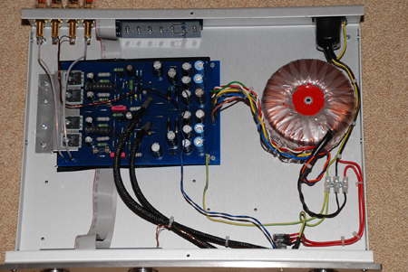
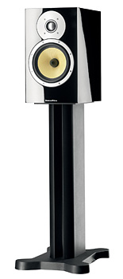
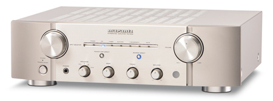
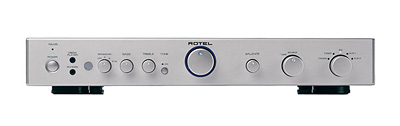

Hifi zoektocht, deel 1: Gezocht!
zondag 13 december 2009
Dze tekst vormt een kort overzicht van mijn indrukken en ervaringen die ik opdeed in de winter van 2009, toen ik op zoek was naar een nieuwe stereo-installatie voor de woonkamer. De nogal onsamenhangende tekst is geschreven in steno-stijl met veel verwijzingen, en dient slechts als leidraad voor anderen die dezelfde zoektocht ondernemen.
Wat wil ik eigenlijk?
Als énige geluidsbron gebruik ik een Apple Mac mini Core2Duo (met iTunes/eyeTV/Plex/etc.). Ik heb geen platenspeler, geen aparte radio-tuner, geen (SA)CD-speler; dat op zich is al een serieuze besparing. Qua budget heb ik tussen de € 1000 en de € 2000 euro veil voor de volgende zaken:
- versterker: design is van geen belang (komt in een verborgen hoekje)
- speakers: bij voorkeur 2 bookshelves (om op te hangen) indien de klank evenwaardig is aan volwaardige floorstands
- DAC: externe DAC (digitaal naar analoog converter) als link tussen de Mac mini en de versterker (want de standaard DAC in computers is belabberd)
Sound Center, Ninove
Een jaar geleden was ik al eens internetgewijs op zoek gegaan naar een nieuwe versterker dito speakers voor de living. De versterker die me toen deed watertanden was de LFD Zero MK III LE (€ 1700), een handgemaakte versterker uit Engeland die hier in België uitsluitend verkrijgbaar is bij Raf Persoons, uitbater van Sound Center in Ninove. Zijn site ziet er nogal amateuristisch uit (een droeve constante trouwens in het hifi-wereldje), maar de reviews liegen er niet om (hifi.nl, Stereophile) : dit is een uitstekende versterker. Dat zou je op het eerste gezicht niet vermoeden (zie foto hieronder).
“I’ll throw caution to the winds and say that the LFD Integrated Zero Mk.III LE is the best-sounding solid-state integrated amplifier I have ever heard. I know of no other integrated, of any type, that sounds quite so right. I base this on listening to four different samples in sessions held nearly 10 years apart. It’s not one of the best, blah blah blah, but the best. Ask Gene Rubin and Walter Swanbon. They don’t bullshit.” — Sam Tellig in Stereophile, Feb. 2008

Hoezeer de LFD ook tot mijn verbeelding sprak, had ik weinig zin om 1700 euro te besteden aan een versterker zonder speakers, te meer daar zo’n high end versterker ook high end speakers vereist. Dat is tekenen voor een financiële kater. Terug met de voeten op de grond dus.
Demeyer, Zottegem

Mijn eerste échte hifi-bezoek bracht ik aan Demeyer, een niet al te grote maar nette hifizaak in hartje Zottegem. De vriendelijke en enthousiaste eigenaar leidde me niet erg verrassend naar de keuzes die ook ik al gemaakt had op het net: de NAD C355BEE en de Cambridge Audio Azur 640A (V2). Van deze laatste is trouwens recent een nieuwe versie gelanceerd: de Cambridge Audio Azur 650A, die nog niet in België verkrijgbaar was. Ik vroeg ook naar bookshelve speakers om op deze versterkers aan te sluiten: hij was behoorlijk in de wolken over de nogal prijzige B&W CM5 speakers (€ 1200, zie foto) en de kleinere broertjes ervan, de B&W CM1′s.
De Cambridge Audio DACMagic gebruikte hij zelf in de testopstellingen in de winkel. Hij kon het apparaatje bestellen voor € 380. Er wordt met DAC’s nogal eens ‘geknutseld’, al dan niet tegen betaling. Audiocom International vervangt onder andere de goedkopere onderdelen uit de Cambridge Audio DACMagic. Lees ook de discussie bij Computeraudiophile.
Stevens Hifi, Gent
De tweede zaak die ik bezocht was Stevens HiFi in Gent. Een bijzonder stijlvolle en chique zaak waar een stel reuzenspeakers van € 25.000 me meteen in het oog sprongen. De eigenaar, die het druk had met de voorbereidingen van een opendeurdag, meende dat de Marantz PM7003 (549 €, zie foto) een versterker was waar NAD en Rotel de duimen voor moeten leggen. Hij zou veel dieper gaan in de basweergave dan NAD en een pak meer vermogen hebben dan de nogal zwakke Rotels van 2x40W. Cambridge Audio weigert hij nog te verdelen omdat er zoveel problemen zouden zijn met herstellingen en garanties. Als bijhorende bookshelve speakers koos hij voor de Revel Concerta M12 (730 €). Een korte luistertest, die ze met de high-end B&W bookshelve modellen vergeleek, was voldoende om hem hierin te volgen.

Stereo House, Roeselare
Frans Van Eeckhout, de eigenaar van Stereo House, heeft het voor de Rotel RA-06 (€ 750, zie foto). Deze versterker wordt in de winkel dan ook als referentie gebruikt. De goedkopere Rotel RA-05 raadt hij af omwille van het beperkte vermogen. Als tweede, quasi evenwaardige keuze stelt hij de Marantz PM7003 (€ 550) voor, al beweert hij dat de Rotel tijdens luistertesten altijd een tikkeltje meer ‘body’ heeft. De Marantz PM8003 (€ 850) zou dan weer nog beter zijn dan beide bovenstaande versterkers. Het is in sé een kloon van zijn kleinere broer, maar uitgevoerd in hoogwaardigere materialen. Maar of je het verschil écht hoort, daar had hij zijn twijfels over.

Over Cambridge Audio is hij niet negatief, zoals Stevens Hifi, maar hij vindt de versterkers persoonlijk te ‘agressief’. Ze gaan ook vaak stuk doordat mensen toestellen (zoals iPods e.d.) aansluiten terwijl de versterker nog aan staat. Cambridge Audio is daar zeer gevoelig voor blijkbaar. Over de Cambridge Audio DACMagic was hij wel te spreken, al had ik een vermoeden dat hij niet goed wist wat hij allemaal met zo’n DAC moest aanvangen. Hij verkoopt ze voor de erg lage prijs van € 319.
B&W zwaait de plak bij Stereo House. Ik zei dat dit merk op internetfora nogal eens onderuit wordt gehaald (te duur voor te weinig), waarop Frans enkel zijn wenkbrauwen fronstte. Hij liet me twee sets horen: het bookshelf model B&W CM5 (€ 1200) en de floorstands B&W 683 (€ 1400).(Let op het geringe prijsverschil.) Ondanks hun kleine omvang, konden de CM5′s gerust hun mannetje staan. Ik was verrast door het enorme geluid dat deze dingen konden produceren. Maar naast de grote 683′s moeten ze toch de duimen leggen. Deze grote speakers kunnen een veel warmere en dikkere bas ‘fond’ meegeven aan de muziek. De CM5′s lijken in contrast erg ‘onrustig’ en ‘schreeuwerig’.
Jean-Luc Daumerie
Via een Kapaza-zoekertje voor de DACMagic kwam ik terecht bij Jean-Luc Daumerie, een hifi-enthousiasteling uit Kortrijk. Een bezoek aan zijn luisterkamer was een echte revelatie. Uiteindelijk heb ik Jean-Luc mijn volledige hifi-set laten bepalen. Wat dat geworden is, lees je in deel twee.
In het licht van het bovenstaande, geef ik nog mee dat Jean-Luc weinig lof heeft voor de alomtegenwoordige B&W speakers. Bijna al deze luidsprekers moffelen het geluid weg in hun kast waardoor ze dof klinken. Toevallig gaan ze wél goed samen met de Rotel RA-04 omdat deze versterker van nature een extra punch geeft aan het geluid waardoor de dofheid enigszins geneutraliseerd wordt.
bruno op 4 februari 2010
In mijn ogen (of beter: oren) heeft Jean-Luc Daumerie gelijk. Ik heb zelf B&W speakers (DM604), en ze vormen het pijnpunt in mijn installatie: dof is een goede omschrijving. Goed voor pop en rock en toestanden, en home theatre geweld, maar niet voor de helderheid van jazz of klassiek.
Heel benieuwd naar deel twee.